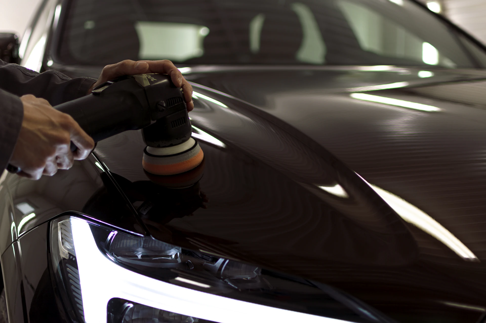
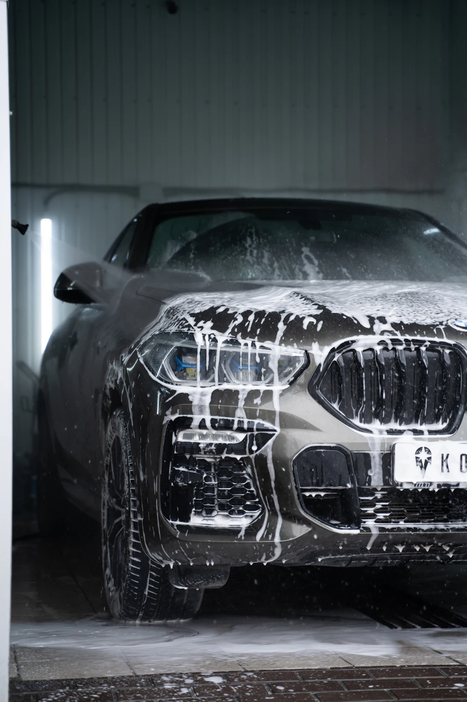
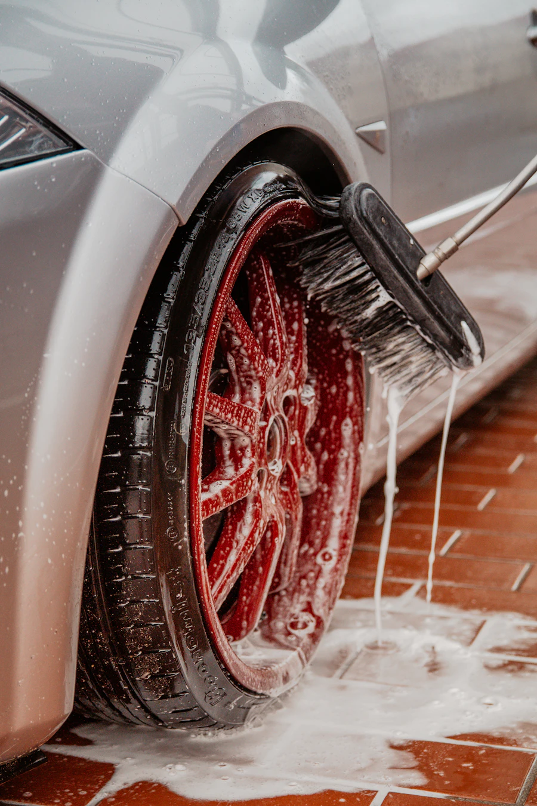
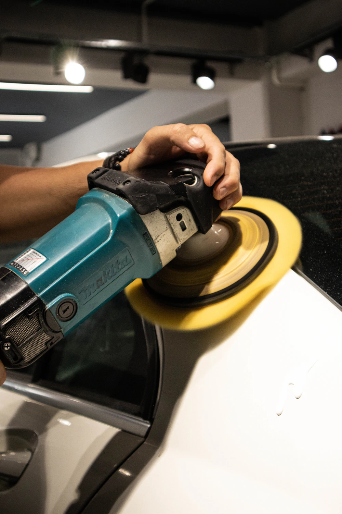
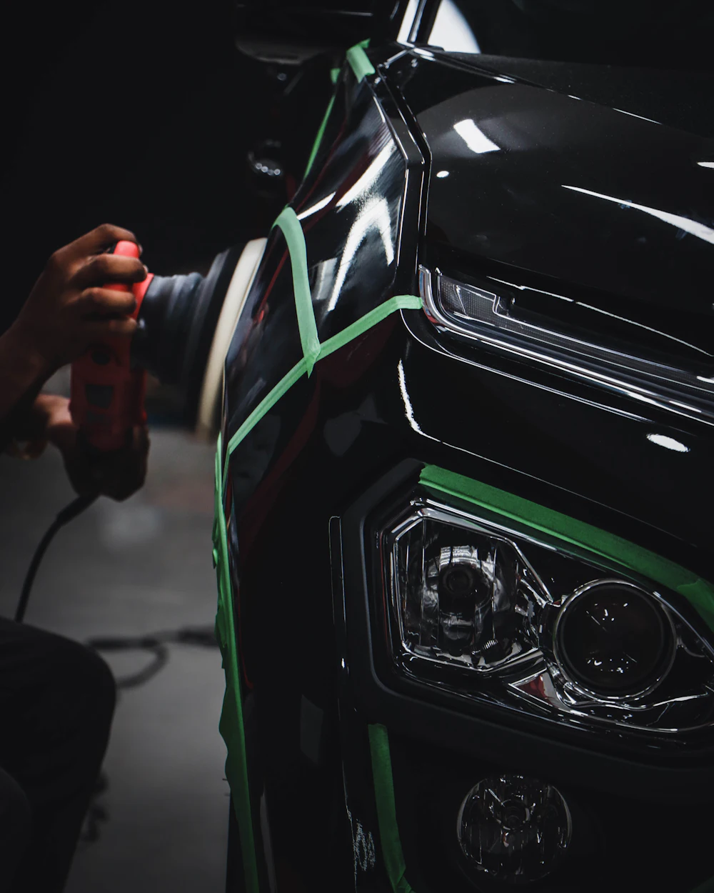

Exterior wash
Four hand-wash packages, from a contact-free foam rinse to a full wash with spray sealant.
How the bay worksServices
Everything happens by hand, in one building: three wash bays out front and a two-bay detail studio behind them. No subcontractors, no brush tunnel.

At a glance
Start with the problem you want solved. Each line below shows typical time with us and where to read more.
Four hand-wash packages, from a contact-free foam rinse to a full wash with spray sealant.
How the bay worksVacuum, steam, hot-water extraction and leather care, priced by how much the cabin needs.
What’s includedBarrel cleaning, iron removal, tire dressing and a ceramic coat that makes brake dust rinse off.
Wheel add-on pricesMachine polishing that removes swirls, haze and light scratches from the clear coat.
Our six stages3- and 5-year ceramic coatings, plus partial-front paint protection film for stone-chip zones.
Wax vs. sealant vs. ceramicHeadlight restoration, odor removal, engine-bay cleaning and a rain-repellent windshield coat.
Specialty prices

Exterior wash & wheels
Brush tunnels drag grit from the last car across yours. We work contact-last: chemistry and water do the heavy lifting before a mitt touches the paint.
A low-pressure rinse knocks off loose dirt and road salt.
pH-neutral foam dwells for 4 minutes to soften bonded grime.
Separate brushes and buckets, so brake dust never reaches paint.
Top-down, a fresh mitt per side, with grit guards trapping sand.
Reverse-osmosis water leaves no minerals to dry into spots.
Filtered air clears mirrors and badges before plush microfiber.
Interior care
3–4 hours for most sedans and SUVs. We remove child seats and loose items, then work from headliner to floor so dust only falls onto areas we haven’t cleaned yet.
Paint correction & coating
Correction removes defects; coating locks the result in. Most studio jobs combine both and take one to three days.
Paint-depth gauge readings at 12 points show how much clear coat we can safely work with.
Iron remover, tar remover and a clay bar leave the surface truly bare.

2-step jobs only: a cutting pad removes deeper swirls and light scratches.
A finishing pad refines the surface to a haze-free, high-gloss finish.
After an alcohol panel wipe, ceramic goes on panel by panel and is levelled within 60 seconds.
Infrared lamps set the coating overnight, so you collect a car that’s ready for rain.
Removes about 60–70% of swirls in one day. Right for daily drivers and any car getting a coating.
Removes 85–95% of defects over two days. For dark paint, show cars and anyone who notices every swirl.
Free paint inspection
Book a free 15-minute inspection at the studio. No obligation and no upsell script.
